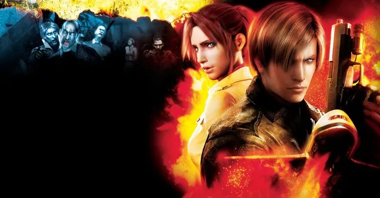
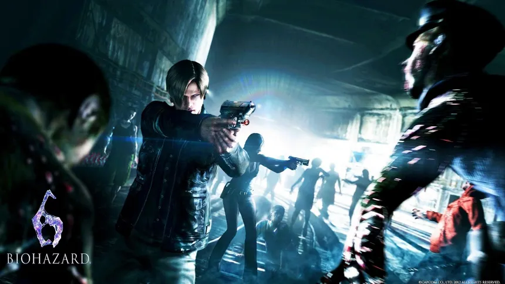

"CAPÍTULO 1: El peor primer día de trabajo en la historia (1998 Resident evil 2)"
"Un auto de policía, una ciudad fantasma y una resaca que le salvó la vida." Septiembre de 1998. Leon Scott Kennedy, un joven de 21 años recién graduado de la academia de policía de Vallombrosa, prepara las maletas para mudarse a Raccoon City. Lleno de idealismo y ganas de hacer el bien, León comete un error humano: tras romper con su novia, se bebe hasta las penas en un motel de carretera y se queda dormido. Llega a la ciudad con varias horas de retraso la noche del 29 de septiembre. Aquel descuido fue su milagro. Al entrar a la ciudad, no encuentra tráfico, ni luces, ni patrullas. Solo un silencio sepulcral interrumpido por una figura tendida en el suelo. Al bajarse del auto para auxiliarla, descubre la pesadilla: no era un accidente, era un cadáver ambulante. Raccoon City había sido devorada por el Virus-T de la corporación biotecnológica Umbrella. En medio del caos, sus caminos se cruzan con Claire Redfield, una estudiante que busca a su hermano desaparecido. Tras quedar separados por una explosión, León se abre paso como puede hacia la comisaría de policía (el R.P.D.), creyendo que allí encontraría refugio. En su lugar, encuentra los pasillos ensangrentados de un antiguo museo convertido en trampa mortal, acechado por zombis, mutantes y una imparable arma biológica en gabardina: el Tyrant (T-103 / Mr. X). En este infierno conoce a Ada Wong, una misteriosa mujer que dice buscar a su novio, pero que en realidad es una mercenaria en busca del Virus-G. Pese a las mentiras y las manipulaciones, entre ellos surge una chispa innegable. Tras sobrevivir a las mutaciones horripilantes del científico William Birkin y ver a Ada "morir" en sus brazos al caer al vacío (o al menos eso creía), León logra destruir al Tyrant y escapar de la ciudad en un tren subterráneo junto a Claire y la pequeña Sherry Birkin, justo antes de que un misil nuclear borre a Raccoon City del mapa. El joven idealista murió en esa ciudad. Lo que salió de allí fue un superviviente.

CAPÍTULO 2: Reclutamiento a la fuerza y entrenamiento de élite (Resident Evil: Darkside Chronicles Operation Javier)
"El gobierno no te da medallas por sobrevivir al infierno; te convierte en su propiedad (Resident Evil: Darkside Chronicles Operation Javier)." Poco después de escapar, el Gobierno de los Estados Unidos intercepta a los supervivientes. Viendo el potencial físico y psicológico de León (y para mantener en secreto lo ocurrido en Raccoon City), el gobierno lo somete a un chantaje tácito: si se une a sus servicios secretos, garantizarán la seguridad y protección de la pequeña Sherry. Durante los siguientes seis años, León deja de ser el chico torpe del R.P.D. Su cuerpo y mente se forjan en el fuego del entrenamiento militar de operaciones especiales más exigente del mundo, convirtiéndose en un experto en artes marciales, manejo de armas de fuego y combate con cuchillo. En 2002, León es enviado a Sudamérica en la Operación Javier. Junto a Jack Krauser, un curtido veterano de las fuerzas especiales, su misión es investigar a Javier Hidalgo, un capo de la droga vinculado a antiguos investigadores de Umbrella. Durante la misión enfrentan monstruos biológicos y descubren la verdad detrás del Virus T-Veronica. Aunque la misión es un éxito, la operación marca el quiebre de Krauser: envidioso del poder de las armas biológicas y herido en combate, frena su carrera militar y simula su muerte para unirse a las sombras.
 /a>
/a>
"2004 mision en españa: Las plagas (Resident Evil 4)"
"Un pueblo olvidado, un culto fanático y el reencuentro con un fantasma." León ya no es un agente cualquiera; es el hombre de confianza asignado a la seguridad de la familia presidencial. Cuando Ashley Graham, la hija del presidente de EE. UU., es secuestrada, todas las pistas apuntan a un remoto y oscuro pueblo en el rural rural español. León viaja solo a la zona, respaldado únicamente por la voz de su operadora, Ingrid Hunnigan, a través del transmisor. Lo que debía ser una misión de rescate se convierte en un nuevo tipo de horror. Los aldeanos no son zombis lentos; están infectados por "Las Plagas", un parásito antiguo que los convierte en marionetas agresivas, inteligentes y coordinadas bajo el mando de un culto religioso fanático llamado Los Iluminados, liderado por Osmund Saddler. A lo largo de su travesía por aldeas sangrientas, castillos medievales e instalaciones militares subterráneas, León demuestra una habilidad sobrehumana para salir con vida de situaciones imposibles (y un sentido del humor sarcástico que usa como escudo contra el trauma). Para su sorpresa, el pasado regresa para morderle los talones: se reencuentra con Jack Krauser, ahora convertido en un mercenario infectado por Las Plagas a quien debe derrotar en un duelo a cuchillo a muerte, y descubre que Ada Wong está viva y trabajando en la zona. Tras ser infectado él mismo por el parásito y lograr extraerlo con tecnología médica de la isla, León destruye a Saddler en una batalla monumental, rescata a Ashley y huye en una moto de agua mientras la isla explota, no sin antes ver cómo Ada se lleva la muestra de Las Plagas en un helicóptero.

"CAPÍTULO 4: El infierno en el aeropuerto y el brote en Harvardville (2005 Resident Evil: Degeneration Película)"
"Umbrella cayó, pero las sombras de sus creaciones siguen vivas." Un año después de lo ocurrido en España, la farmacéutica WilPharma intenta limpiar el nombre del sector biotecnológico, pero el terrorismo biológico ya se ha extendido por el mercado negro. Un avión comercial infectado con el Virus-T se estrella contra el aeropuerto de Harvardville, desatando el caos. León es enviado como líder de un equipo de respuesta táctica rápida para contener la infección. Allí se reencuentra, siete años después, con Claire Redfield, quien ahora trabaja para la ONG pacifista TerraSave. Juntos destapan una conspiración corporativa que involucra el Virus-G y salvan la ciudad una vez más, demostrando que la química entre ambos sobrevivientes de Raccoon City sigue intacta.

CAPÍTULO 5: Guerra biológica en Europa del Este (2011 Resident Evil: Damnation Película)
"Lickers como perros de caza y tanques en la niebla." León viaja a la República Eslava Oriental, una nación ficticia en Europa del Este envuelta en una sangrienta guerra civil. Hay rumores de que el bando rebelde está utilizando bio-armas (Lickers controlados mediante una versión modificada de Las Plagas) para enfrentarse a las fuerzas gubernamentales. A pesar de que el gobierno estadounidense le ordena retirarse a mitad de la misión, León ignora las órdenes y decide quedarse solo para evitar un desastre humanitario. Tras enfrentarse a Tyrants gigantescos y hacer una alianza temporal con los rebeldes locales, León presencia cómo Rusia y EE. UU. intervienen para frenar la crisis. Una vez más, sus caminos se cruzan brevemente con Ada Wong.
re-6
CAPÍTULO 6: El asesinato del Presidente y la crisis global del Virus-C (2013 Resident Evil 6)
"A apretar el gatillo contra el hombre que era tu amigo." El presidente de los Estados Unidos, Adam Benford, decide dar un discurso histórico en la Universidad de Tall Oaks para revelar la verdad sobre lo que ocurrió en Raccoon City en 1998, convencido de que la transparencia es la única forma de combatir el bioterrorismo. León, su guardespaldas personal y amigo cercano, está a su lado. Sin embargo, un ataque bioterrorista a gran escala orquestado por la organización Neo-Umbrella y el consejero de seguridad nacional Derek C. Simmons infecta la universidad. León se ve obligado a tomar la decisión más dolorosa de su vida: dispararle en la cabeza al mismísimo Presidente Benford, convertido en zombi. Inculpados injustamente por el asesinato, León y su nueva compañera, Helena Harper, se convierten en fugitivos. La caza los lleva desde Estados Unidos hasta la caótica ciudad de Lanshiang (China), en medio de un brote global provocado por el mortífero Virus-C. En China, la historia alcanza su clímax: León cruza caminos con Chris Redfield (liderando las tropas de la BSAA) en una tensa confrontación de ideologías, combate a criaturas mutantes masivas, descubre la existencia de un clon de Ada Wong (Carla Radames) y finalmente derrota a Simmons tras una serie de mutaciones monstruosas en lo alto de un rascacielos.

CAPÍTULO 7: Nueva York en cuarentena y el Síndrome de Estrés Postraumático (2014 Resident Evil: Vendetta Película)
"Un héroe roto que busca las respuestas en el fondo de una botella." El peso de más de 15 años viendo morir gente a su alrededor le pasa factura. En 2014, encontramos a un León consumido por el alcoholismo, el agotamiento mental y el trastorno de estrés postraumático (TEPT). Refugiado en un bar de vacaciones, cuestiona si todas sus luchas han servido de algo cuando el bioterrorismo parece no terminar nunca. Es buscado por Chris Redfield y la Dra. Rebecca Chambers. Un traficante de armas llamado Glenn Arias ha desarrollado el Virus-A, un virus selectivo que ataca únicamente a quienes no han recibido un antídoto previo, y planea soltarlo en Nueva York como venganza por la muerte de su esposa. A pesar de su cinismo inicial, el sentido del deber de León prevalece. En una secuencia de combate urbano alucinante —donde demuestra su maestría disparando mientras conduce su motocicleta e interactúa en combates cuerpo a cuerpo de ritmo frenético—, León colabora con Chris para detener la bomba biológica en Manhattan y distribuir la cura a la población infectada.

CAPÍTULO 8: El penal de Alcatraz y la reunión de veteranos (2015 Resident Evil: Death Island Película)
"La isla de la que nadie puede escapar... de nuevo." La última aventura conocida en la cronología oficial de León. Tras investigar el secuestro del Dr. Antonio Taylor a manos de mercenarios con tecnología avanzada, las pistas conducen a León, Chris Redfield, Claire Redfield, Jill Valentine y Rebecca Chambers hacia la famosa prisión de Alcatraz, en la bahía de San Francisco. Un nuevo villano, Dylan Blake (un antiguo mercenario traumatizado por los sucesos de Raccoon City), intenta infectar al mundo usando un dron cargado con mosquitos transgénicos que transmiten una variante modificada del Virus-T. Por primera vez en la historia de la franquicia, los cinco grandes héroes del brote original luchan codo a codo en una batalla multitudinaria contra una monstruosa aberración marina dentro del penal. Tras una orgía de explosiones y trabajo en equipo, logran neutralizar la amenaza.

CAPÍTULO 9: El "Síndrome de Raccoon City" y el retorno a las ruinas (2026 - 2028 Resident evil Requiem 9)
"Casi 30 años después, las sombras del pasado exigen su réquiem final." Tras años de combates ininterrumpidos, el peso físico y psicológico alcanza su punto crítico. Leon ya roza los 50 años y carga con las secuelas de las múltiples infecciones a las que sobrevivió en el pasado. Descubre que padece lo que los médicos llaman el "Síndrome de Raccoon City", una degeneración celular causada por los virus latentes en su cuerpo que le da un margen de tiempo limitado para encontrar una cura antes de que sea demasiado tarde. La misión que desencadena todo comienza con una misteriosa oleada de muertes en Estados Unidos. La pista de un policía desaparecido en un hotel lleva a Leon a cruzar caminos con Grace Ashcroft, una analista del FBI que investiga la muerte de su propia madre. Sus sospechas conducen a Victor Gideon, un antiguo científico de Umbrella que opera en las sombras. El destino obliga a Leon a hacer lo que juró no volver a hacer nunca: regresar a las ruinas subterráneas y olvidadas de Raccoon City y a los laboratorios de la instalación ARK para detener la propagación de una nueva amenaza biológica y buscar la cura ("Elpis").
"EL ESTADO ACTUAL DE LEON"
En Resident Evil Requiem, vemos a un Leon sensiblemente envejecido, más cínico y pesimista, pero conservando su característico humor sarcástico en combate. Sigue siendo un letal combatiente de la D.S.O., pero esta vez no solo lucha para salvar al mundo, sino para saldar sus propios asuntos pendientes y cerrar el ciclo que empezó aquella trágica noche de 1998 en Raccoon City.